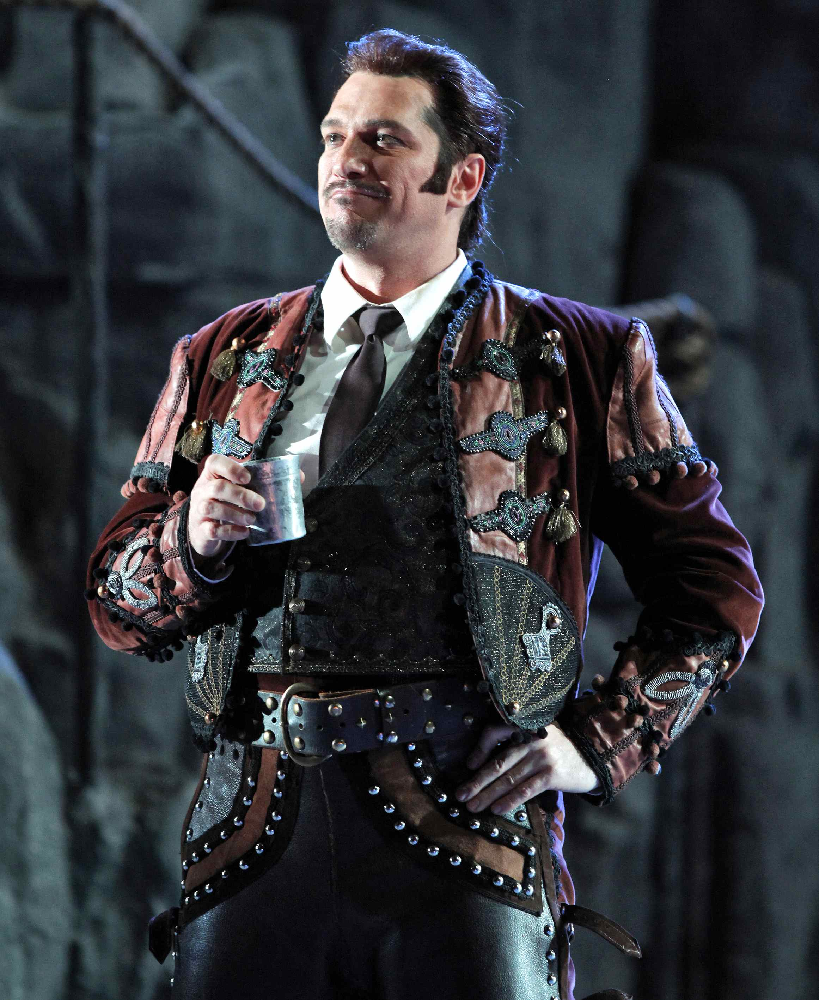
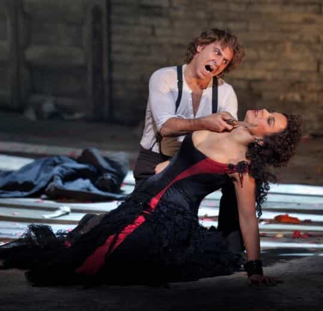
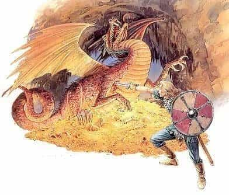
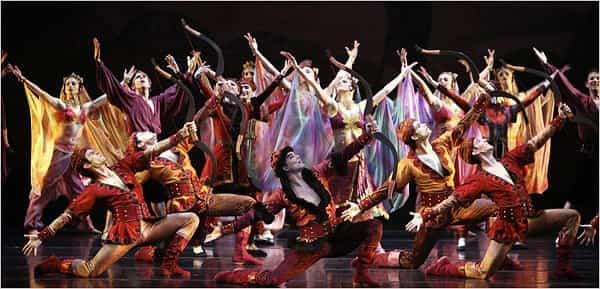
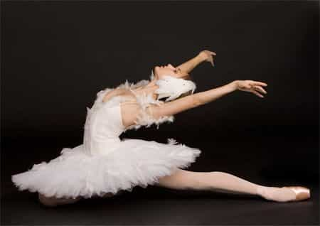
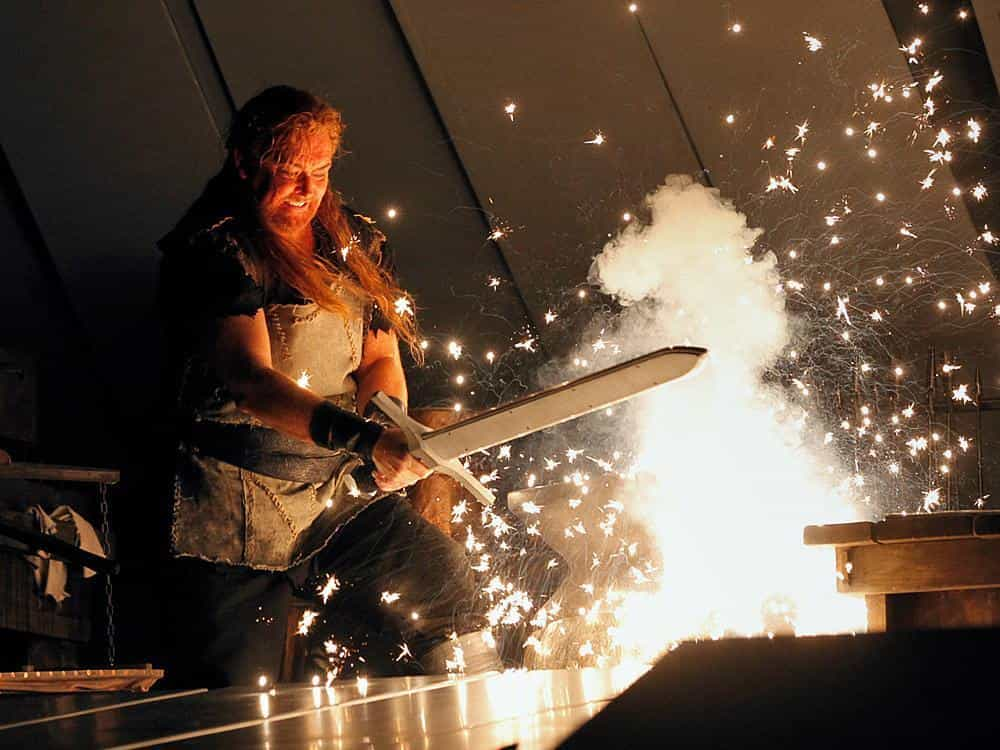
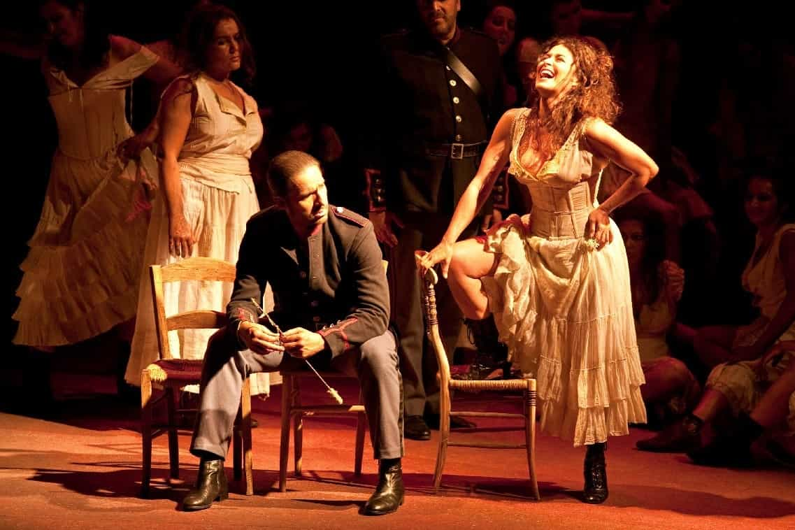
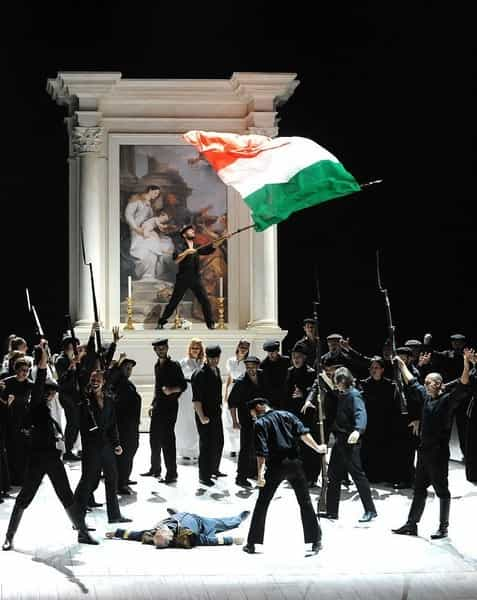
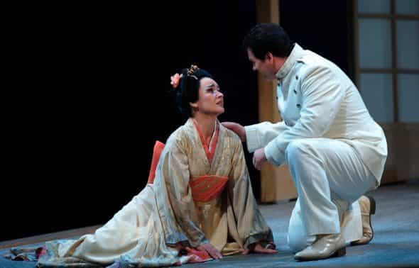
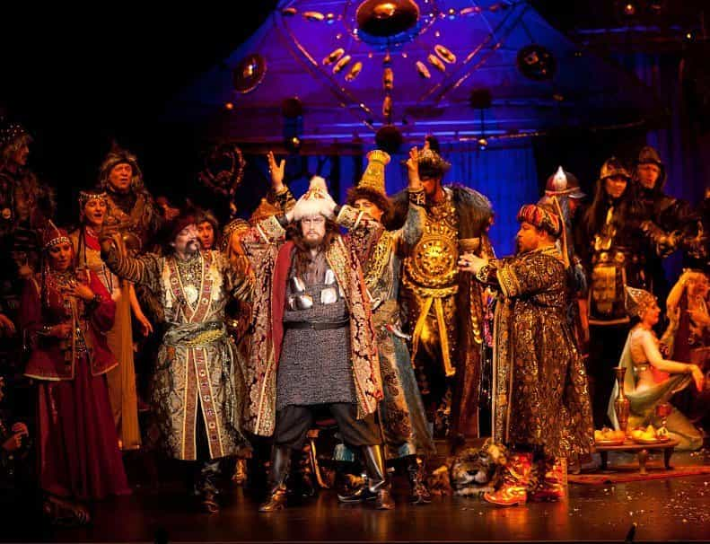

< < < Back
5 Reasons Why Classical Opera Should Be Your New Masculine Hobby – Return Of Kings
I recently saw the opera “Carmen” by Bizet, with my old man. I’d seen it before but it never gets old. Some prime father-son bonding, unfortunately clouded by the darkness of my hangover.
Something struck me as I found myself deconstructing the themes evoked in the masterpiece. I was seeing it for the first time since my eyes have been opened by neomasculine and red pill concepts. I dissected it under a radically different light.

Meet Carmen, the gipsy slag and original tattooed hipster. We follow that train wreck and her drunken, attention-whoring antics, sleeping around in a way that would make her strong, independent female colleagues proud. She revels in the beta Don Jose’s thirst and exploits it in every possible way, while giving her arsehole to Escamillo, the alpha toreador that does not give a hoot. Very contemporary.
Throw him a life jacket. The man’s about to drown in a sea of pussav’.
Ended as expected. Escamillo becomes the 254th dude to glaze Carmen’s face with his seed, then he folds his fishing rods and goes back to kicking some local bull’s arse. And after white-knighting ad nauseam, beta stabs Carmen in a fit of rage because he did not get any. Standing ovation. Bizet knew what was going on.

Sounds like a familiar chain of events, does it not? Believe it or not, the greatest opera works are red pill to the core. Here is why you should give it a go, if you have not already:
1. The values and the historical periods it celebrates

Male characters that exude masculine fortitude through their actions and body language. Revenge, dealing with adversity, duels mano a mano, war, peace. It is all there.
Ah, Wagner and its Germanic and Norse heroes, fearlessly defying dragons and supernatural beings. The vengeful deities and the Valkyries, carrying the worthy warriors to the domain of the gods after they fell in battle or the corruptible, treacherous, and polygamous nature of women in Bizet and Puccini’s operas.
History takes form before your eyes. Pharaohs, emperors of the Far East, army commanders, bull fighters, revolutionaries of old. It is people that make shit happen and overcome challenges that make an epic musical and aesthetic performance worth watching.
I doubt that there will be any operas about neck-bearded Bronies or Anita Sarkeesian in the future. Although no one knows what can come out of an SJW’s wet dream when triggered.
2. The pure musical genius
Every element was crafted by the masters after days, months of reflection, sometimes leading to madness in the search for perfection.
Minaj, Rihanna and the degenerate soup of lambda pop bands. This acoustic pollution has no element of originality. That’s no news. What’s the background? “I was popping some E’s and snorting coke on that sheik’s cock when inspiration struck.”
Opera has a story behind every musical element. The roaring horn of Siegfried the valiant, luring the dragon Fafnir out of his lair (Siegfried) or the triumphant strings when victorious bullfighter Escamillo comes unscratched from the arena once again (Carmen). The blaring trumpets of Aida (Verdi). The list could go endlessly.
3. The notion of classicism and aesthetic excellence

The beautiful decor, the marble and the gold. Although majestic, the vibe is surprisingly relaxed and friendly. After all, it remains a form of entertainment.
With their amazing dancing, you will see athletes at the top of their art. Beautiful, slender girls doing pirouettes while scantily clad. Winning. Disadvantage: boat loads of male dancers are as gay as a three-pound note. But at least they keep it backstage.
There is a micro-phenomenon of new wave, special snowflake directors that try to revolution the canons of classical opera. I saw Carmen being banged behind a burning car next to what looked like a flamenco-infused Thunderdome. That was in Paris opera, stronghold of modernist SJW nonsense. When you touch the sacred, the assembly throws shit (not literally) and boos. And it did that day.
When something is bad, people voice it. That is the way it goes. No star ballerina or tenor is safe. Come with your top game or go home. Roberto Alagna, the world’s number one tenor, once got booed and whistled. Answered right back by flipping the bird to the audience and storming off the stage. Hatred and love always go hand in hand in the opera.
4. The crowd you mingle with
Cheerful people all around. Old ones full of knowledge and young ones full of class. Stunning girls strolling around in their dresses and high heels. Men in tuxedos and dressed to the nines.
You won’t see the fat leftist knobjockey with electric blue hair and cheek piercings. Perhaps because of the patriarchal rules of the audience and the venue. Silence has to be respected, no phones on or Mountain Dew allowed. Unthinkable.
From experience, many successful business partnerships, personal or not, started from a common passion about opera. Businessmen and entrepreneurs are quite often classical music enthusiasts. People that invest money to see three hours of an epic performance that requires focus know what they want.
But it remains affordable as a treat. The uneducated (by choice) rabble does not get in and if they could afford it, would still not go. Winning.
Not as popular in the West as it used to be, opera is still one of Eastern Europe’s refined hobbies. The girls you meet there are some of the most beautiful beings you can come across.
5. The essential part it holds in human culture

Massenet, Mozart, Tchaikovsky. That’s culture, bloody hell. And a top subject of conversation. Try to ask people about their taste in opera next time you go out. You’ll soon know who’s who.
It’s everywhere. Films, series. It has always been used for the universality and power of its melodies. You’ll be able to tell which piece is which and instead of seeing that ad about the new soon-to-be-outdated car, you will be filled with memories of that night with Natasha on your arm, admiring the ballerinas on stage and later peeling off her cocktail dress on your apartment’s balcony.
Before you go…
While Verdi has my preference on the musical point of view, here are my favourite five hardcore red pill operas:
Any part of “der Ring des Nibelungen” by Richard Wagner

“Carmen” by Georges Bizet

“Les Vêpres Siciliennes” by Giuseppe Verdi

Rebels of Sicily fighting against the brutal Napoleonic rule. Revenge for the death of a brother and preparation of a bloody uprising. “Freedom or death” is the motto.
“Madama Butterfly” by Giacomo Puccini

Enter the alpha (when he kept his frame) American officer Pinkerton and his geisha lover, who got such a level of pubis tingles provoked by his dark triad elements and exotic persona that she slit her throat as soon as she sees that he has poached some fresher poon than hers.
“Prince Igor” by Alexander Borodin

Thou shall defend the Holy Orthodox Church and the land of the Rus’ against the raids of the Polovtsian tatars. A tale of honour, betrayal and sense of duty for one’s family and motherland. “All the slave girls praise the khan,” boys.
So go ahead, check the schedule of your local opera and have fun. Just try to avoid “Die Meistersinger von Nürnberg” as your introduction to opera. The bastard is 5.25 hours long when it’s uncut.
Read More: 5 Reasons To Take Up Classical Music


{kind=link}
{kind=link}
{kind=link}
{kind=link}
{kind=link}
{kind=link}
{kind=link}
{kind=link}
{kind=link}
{kind=link}
{kind=link}
{kind=link}